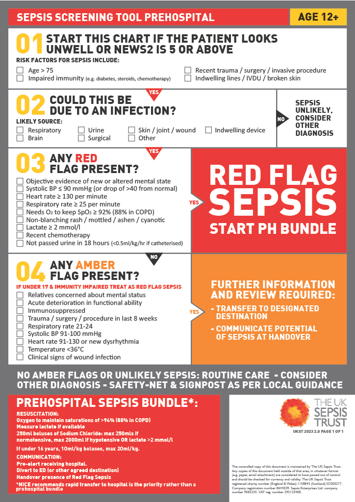

Welcome to the Medical Infographics Category
Identifying Possible Sepsis Flowchart (From The UK Sepsis Trust)

Sepsis: ‘a life-threatening condition that arises when the body's response to infection causes injury to its own tissues and organs.’